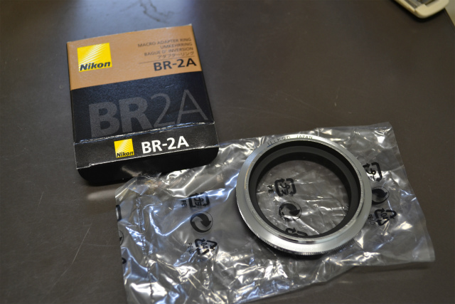
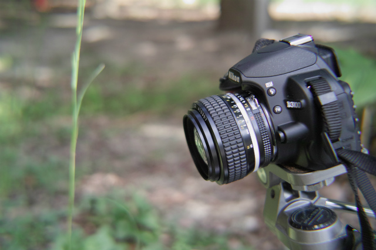
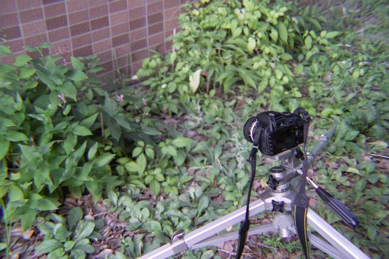
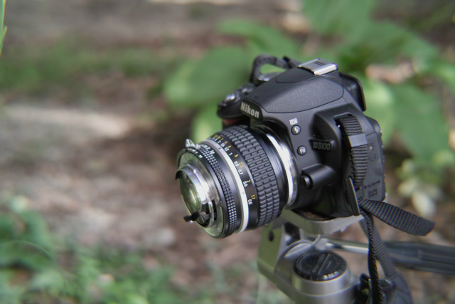
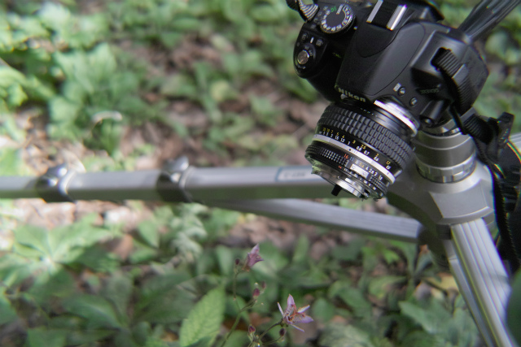
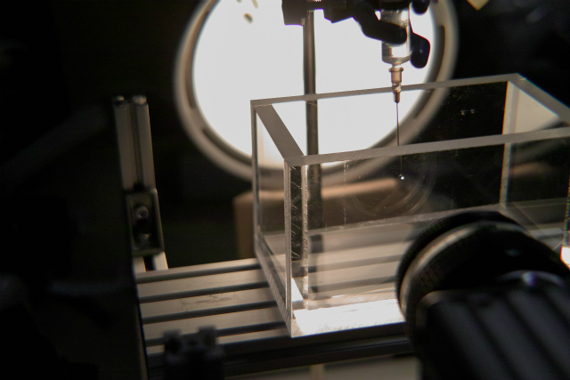

| ・リバースリング (H24.09.16) | |||
画像計測は見えないことには始まりません。とにかく撮影条件や機材を適切に選ぶ必要があります。目で見えてもカメラで撮れないと現象は定量評価できません。リバースリングで接写してみました。たかだか2000円くらいのリングで世界が違って見えます。 |
|||
|

これがリバースリング |
Nikkorの標準レンズならこの画角 | ||
|

外見も普通の標準レンズがついているだけです |

ホトトギスも咲き始めですね | ||
|

リバースリングでレンズを前後逆にすると |

こんな感じに寄れます | ||
|
あまりに繊細、そして精緻！ |

ノズルから出る液滴を高速度カメラで撮ってみます | ||
|
寄ると複雑な現象ということがわかります |
|||